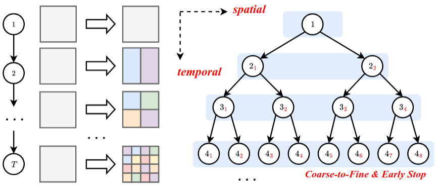
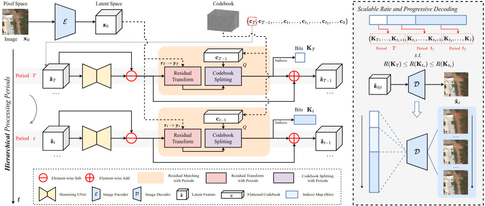

Spatio-Temporal Hierarchical Codebook Diffusion
Abstract
Remote sensing data contains vast amounts of geographic structural information and fine-grained textural details, making compression essential and necessitating efficient processing for downstream interpretation tasks. Generative models have shown great potential in learned image compression, offering high compression rates and exceptional generation quality. Among these, diffusion models stand out for their ability to produce high-quality reconstructions. However, they may hallucinate small structures and textures due to significant information loss at limited bitrates. Furthermore, compression based on the diffusion process suffers from long inference times caused by numerous denoising steps, which hinders practical deployment. We propose Spatio-Temporal Hierarchical Codebook Diffusion (STHCD), a training-free framework that dynamically allocates resources to align with this hierarchy. STHCD introduces three synergistic components: (1) Spatial Residual Transformation via parameter-free unshuffle operations to adapt spatial granularity; (2) Channel-wise Codebook Splitting for flexible bit allocation without memory explosion; and (3) a Time-Dependent Hierarchical Policy to orchestrate these operations across timesteps. Extensive experiments on nine datasets show that STHCD significantly outperforms state-of-the-art methods in perceptual metrics (LPIPS, DISTS, FID). At equivalent bitrates ($\sim$0.12 bpp), STHCD achieves an 8$\sim$12.5$\times$ speedup (80$\sim$125 vs. 1000 steps) over standard temporal codebook diffusion while optimizing LPIPS by 29.5%. Furthermore, STHCD can achieve a remarkable 15-step diffusion at the same bitrate, with only a minor LPIPS drop, establishing a new paradigm for hierarchical remote sensing compression.
Method

Motivation.

Framework.
Results
Citation
@article{cheng2026spatio,
title={A Spatio-Temporal Hierarchical Diffusion Framework for Training-Free Perceptual Remote Sensing Image Compression},
author={Cheng, Yangxuan and Meng, Fanyang and Qi, Hao and Shen, Han and Zhang, Zhongqiang and Wang, Ye and Liang, Yongsheng},
journal={IEEE Transactions on Geoscience and Remote Sensing},
year={2026},
volume={},
number={},
pages={1-1},
publisher={IEEE},
doi={10.1109/TGRS.2026.3675642}
}